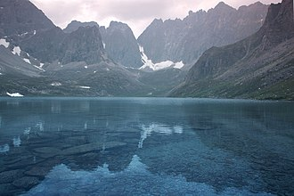
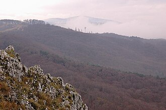
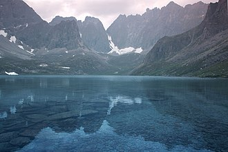
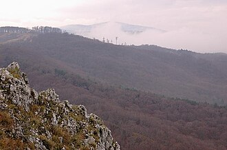

Заповедник "Азас"
Заповедник "Азас"
 



Заповедник "Азас"
«Азас» — государственный природный заповедник. Расположен в Тоджинском кожууне Республики Тыва. Создан 11 января 1985 года на базе республиканского заказника «Азас». Входит в состав ассоциации заповедников и национальных парков Алтай-Саянского экорегиона. Администрация заповедника расположена в селе Тоора-Хем.
Территория заповедника (300 390 га в границах 1991 г.) расположена в центральной части Тоджинской котловины на северо-востоке Тувы и вытянута в широтном направлении вдоль р. Азас. Географические координаты её крайних точек: север — 52°42', юг — 52°16', восток — 98°42', запад — 96°30'. Восточная граница проходит по административной границе с Республикой Бурятия. Вокруг заповедника создана двухкилометровая охранная зона общей площадью 90 тыс. км2.
Тоджинская котловина — огромная межгорная впадина в пределах Алтайско-Саянской горной страны. Это уникальный водосборный бассейн, питающий истоки крупнейшей в Сибири реки — Енисея. Её колоссальные гидроресурсы заключены в густой речной сети и многочисленных озёрах.
 Алтайский заповедник
Алтайский заповедник
Алтайский заповедник, официальное название Алтайский государственный природный биосферный заповедник — особо охраняемая природная территория в Алтайских горах. Основан в 1932 году, впоследствии упразднялся и воссоздавался вновь. Часть объекта всемирного наследия ЮНЕСКО «Золотые горы Алтая». Входит в состав ассоциации заповедников и национальных парков Алтай-Саянского экорегиона.
Климат заповедника континентальный, горный. Зависит от особенностей рельефа. Зима на берегах Телецкого озера — одна из самых мягких в Сибири, что связано с влиянием обычных в это время года восточных и юго-восточных фёнов. Северо-западные ветры, напротив, приносят похолодание. К югу зимние температуры падают. Лето из-за возвышенного положения заповедника прохладное, на горных вершинах отсутствует. На севере оно влажное, на юге более сухое.
На территории Алтайского заповедника обитает 59 редких и исчезающих видов животных, что составляет около 52% от всех охраняемых в Республике Алтай.
Астраханский заповедник
Астраханский ордена Трудового Красного Знамени государственный природный биосферный заповедник — заповедник в дельте реки Волги в Астраханской области России. Включён во Всемирную сеть биосферных резерватов. Относится к водно-болотным угодьям международного значения.
Заповедник был учреждён 11 апреля 1919 года решением общественной Учёной комиссии при Астраханском университете. Первым директором заповедника стал учёный-орнитолог Владимир Алексеевич Хлебников. Как природный объект государственного значения утверждён постановлением Совета народных комиссаров РСФСР от 24 ноября 1927 года.
Заповедник расположен в низовьях дельты Волги, на территории Камызякского, Володарского и Икрянинского районов Астраханской области.
Территориально разбит на три участка или кластера:
Первоначально площадь заповедника составляла 23 000 га. Потом, в связи с падением уровня Каспия, ростом надводной дельты в сторону моря, площадь заповедника увеличилась почти в 3 раза и достигла 67 917 га, в том числе 11 298 га — морская акватория заповедника.
Б9123-09.09.04 - 6 подгруппа, Лебедев Арсений